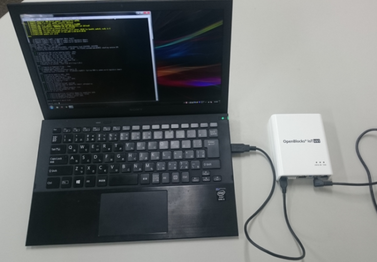
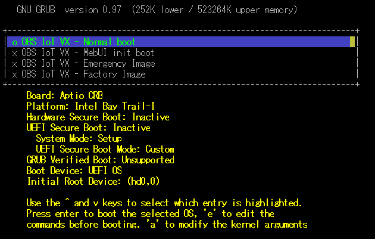

注意事項及び補足¶
OpenBlocks IoT VXシリーズの電源について¶
本製品はACアダプタによる給電及びワイドレンジ電源入力以外での、電源運用は保障対象外となります。そのため、使用電源についてご注意ください。
自動再起動機能¶
本WEB-UIはモバイル回線のモデムを制御しています。モバイル回線のモデムが不慮の復旧不能状態に陥った場合、本体再起動が動作します。
LTE/3Gモジュール(ソフトバンク)運用時のアクセス¶
LTE/3Gモジュール(ソフトバンク)を運用している場合において、LTE回線側にグローバルIPアドレスが付与される場合には、グローバルIPアドレスと以下のポート番号の関係から各種サービスが使用できます。
※フィルター許可にて開放している必要がありますのでご注意ください。この場合、再起動後も適用している必要があります。
※グローバルIPアドレスはDDNSサービスを用いることで容易に使用できます。
サービス種類 |
ポート番号 |
補足 |
|---|---|---|
SSH |
50022 |
|
WEB UI(HTTPアクセス) |
50880 |
ブラウザでのアクセスとなります。 |
WEB UI(HTTPSアクセス) |
54430 |
ブラウザでのアクセスとなります。 |
GRUBメニュー表示方法について¶
OpenBlocks IX9及びOpenBlocks IoT VX2では、起動時にシリアルポートにGRUBメニューが表示されます。そのため、GRUBメニューの確認等を行いたい場合は、下図のようにシリアルコンソール接続にて作業を行ってください。

Windows PCの場合、USBポートに接続されると自動的にUSBシリアルドライバがインストールされます。(Windows PCがインターネット環境につながっている場合です。)
ドライバのインストールが完了したら、TeraTermやPuTTYなどのターミナルソフトでシリアルポート接続が可能となります。
- 尚、OpenBlocksのシリアルポートのデフォルト通信パラメータは以下の通りです。
通信速度：115200bps
データ長：8bit
パリティ：無し
ストップ：1bit

Factory Reset(工場出荷状態への切り替え)¶
OpenBlocks IX9及びOpenBlocks IoT VX2にてストレージ領域へパッケージの追加や重要データの削除等を実施してしまい、工場出荷状態に戻したい場合、GRUBメニューの「Factory Image」を選択することで工場出荷状態へ戻すことが出来ます。
工場出荷状態に戻した場合には、設定したデータ等は削除されますのでご注意ください。

また、OpenBlocks IoT BX/EXシリーズにて工場出荷状態に戻したい場合には弊社製品HPの『ドキュメント』→『その他』→『ファクトリーリセット』をご確認し、作業を実施してください。
使用ポート一覧¶
WEB UI込みでのOpenBlocksでは以下のポートを使用及び使用する可能性があります。
サービス種類 |
ポート番号 |
補足 |
|---|---|---|
FTP |
21 |
FTPインストール時 |
SSH |
22 |
ポート番号変更可能 |
DNS |
53 |
|
DHCP |
67 |
|
NTP |
123 |
|
NetBIOS |
137 |
Sambaインストール時(UDP) |
NetBIOS |
138 |
Sambaインストール時(UDP) |
NetBIOS |
139 |
Sambaインストール時 |
Samba |
445 |
Sambaインストール時 |
Modbus |
502 |
IoTデータ制御インストール時 |
WEB UI(HTTPアクセス) |
880 |
|
ECHONET |
3610 |
IoTデータ制御/HVSMC使用時 |
Node-RED |
1880 |
Node-REDインストール時 (ポート番号変更可能) |
Shell in a box(WEB SSH) |
4200 |
|
WEB UI(HTTPSアクセス) |
4430 |
|
SSH |
50022 |
LTE/3Gモジュール(ソフトバンク) / WAN側のみ |
WEB UI(HTTPアクセス) |
50880 |
LTE/3Gモジュール(ソフトバンク) / WAN側のみ |
WEB UI(HTTPSアクセス) |
54430 |
LTE/3Gモジュール(ソフトバンク) / WAN側のみ |
WEB UI独自サービス |
63003 |
自動外部ストレージマウント機能¶
WEB UIにおいて特定のボリュームラベルの付いたデバイスが見つかった場合、自動でマウントされます。
WEB UIの機能等で保存先管理等を行う場合にご使用ください。
ボリュームラベル |
マウント先 |
備考 |
|---|---|---|
WEBUI_STORAGE |
/var/tmp/storage |
ファイルシステムはNTFSのみをご利用いただけます。 |